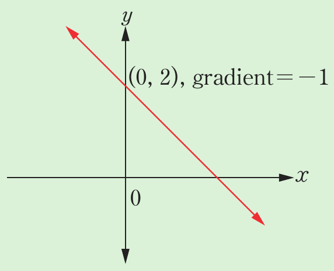
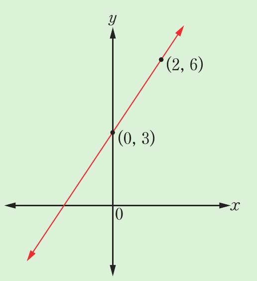
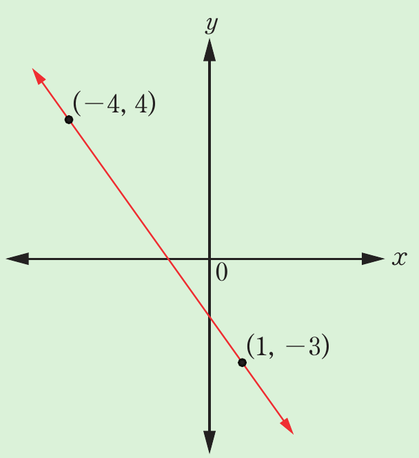
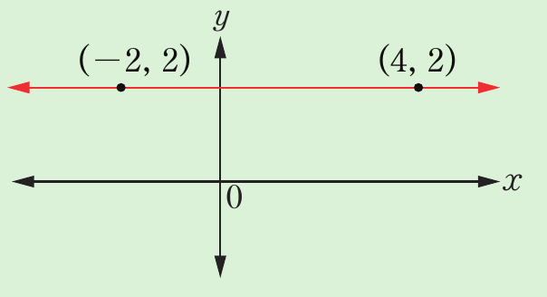

Exercise 6.5
1. Find the equation of the line using the given point and gradient:
(a) (2, 1), gradient 2
(b) (0, 5), gradient −2
(c) (1, −3), gradient 3
(d) (−2, −4), gradient
(e) (0, 0), gradient −3
2. Find the equation of the line using the given information:
(a) -intercept = (0, 2), gradient = 1
(b) -intercept = (0, −16), gradient = 4
(c) -intercept = (0, 7), gradient =
(d)

(0, 2), gradient = −1
(e)

(f)

(g) horizontal line through (−2, 2) and (4, 2)

3. In each of the following conditions, find the equation of the straight line in the indicated form:
(a) Passing through the point (3, 5) with gradient 2 in the form .
(b) passing through the point (4, 7) having a gradient of −3, in the form